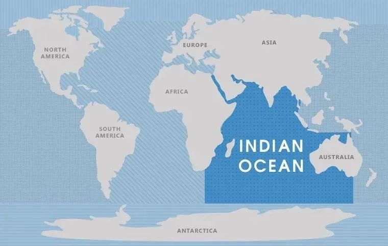

收录于合集 #《太平洋学报》 1个
导读
近年来，随着美国抛出“印太战略”、重塑印太军事布局，印度洋成为国际地缘政治的新热点。作者认为，印度洋是世界海权的中心，是西方海权国家意欲绝对控制的海域。对于中国而言，要充分发挥传统的陆权优势和独特的海权优势，一方面把经营大西部作为对内稳定华中地区和对外谋划印度洋的战略基地，另一方面有必要 根据印度洋的地缘政治新特点，将以印度为中心、面向印度洋的“一点一面”战略改为“三点一面”的印度洋战略：“一面”仍是印度洋，“三点”是缅甸、印度和伊朗三个战略支点。 本文转载自“文化纵横”，原刊于《太平洋学报》。文章仅代表作者观点。特此编发，以飨读者。
北半球三大洲地缘政治特点及其对中国的影响:兼谈大西南的战略地位与经营印度洋
从印度看喜马拉雅。图源：互联网
01
底线与极限：喜马拉雅山地背景中的印度和中国
一方水土养一方人，印度之于中国，其间独特的地理环境决定了两国的政治意义超过它的军事意义。
从军事上看，印度担心的是通往印度的两个陆道的安全，西面通道的制高点是它西北面的阿克赛钦，东面通道的制高点就是中国藏南地区的察禺至墨脱一线。除此，几乎没有可供大部队顺利北上或南下的道路。1962年印度侵犯我们，就是想控制这些关键地带。
印度地形的特点是北面易进难出，南面印度北上困难而就地固守容易。 在人类还没有征服大海的中世纪，从北面南入印度的外部势力进去如不能当统治者就只有做奴隶，二者必居其一。
明乎此，当年希特勒和罗斯福都想用印度诱使斯大林与之为盟，为斯大林所拒绝的原因。这个经验对于我们今天的印度洋研究是有借鉴意义的。有些同志只看到南进容易的优势，却忽视了不易收回的劣势。军事进攻犹如拉皮筋，不怕拉长，最怕的是收不回来。退不回来的进攻一定是最失败的进攻。
除斯大林之外，在对印政策上，还有三个很有学问的人走到印度边上都止住了脚步。第一个是 亚历山大 ，他是希腊哲学家亚里士多德的学生，他从希腊一路打到印度河边，他停了下来，沉思三天后决定打道回府。他知道进印度不难，但进去后若出不来那整个希腊就丢了。第二个人就是 成吉思汗 ，他曾在英国人、美国人和苏联人望而生畏的帕米尔高原上所向披靡，书载，1222年，被蒙军打败的花子剌模残部在札兰丁的带领下“向申河(今巴基斯坦境内的印度河)岸边逃去，企图渡过申河，逃往印度。”但当成吉思汗大军追至印度河边时却停下了。那天晚上成吉思汗跟丘处机谈了一晚上。丘处机跟他讲了什么？书上说给他讲养生，其实是借讲生命成长的原理讲战略哲学。治病如治国，用药如用兵，战略和养生同出一理；从某种意义上说，战略是关于国家养生的学问。那几晚的深谈促使成吉思汗打道回府，回到新疆，接着就剑指中原。
第三个人是 毛泽东 。毛泽东在对印自卫反击战中静如处子，动如脱兔，张弛有度，收放自如。很多人不理解为什么打过去又退回了呢？看看立体地图就明白，我方的资源补给在当时很难保证，打下去会因资源不继而守不住。基辛格看到这一点，他说：“中印边界冲突中，军事后勤条件对印度有利，因为喜马拉雅山离中国的力量中心过于遥远。”当时毛泽东考虑更多的不是占据，而是守住，不是如何进攻，而是进攻后是否能撤回。
毛泽东利用同期发生的古巴导弹危机巧妙地避免了美苏的插手：1962年10月22日，肯尼迪决定封锁古巴，古巴导弹危机随即爆发，当天，中方的自卫反击从守势转入攻势；11月20日，肯尼迪宣布结束封锁，古巴导弹危机结束，中国政府于11月21日零时发表声明，宣布于11月22日零时起，中国边防部队在中印边界全线停火。为什么要选择古巴导弹危机？不像克里米亚之于俄罗斯，藏南前线的地形不利于坚守，不能让第三国尤其是美国和苏联介入并由此扩大和延长中印冲突的规模和时间。
军事行动，首先考虑的不是怎样开始而是怎么结束，不应仅是打赢而是战果如何消化。 1905年（明治38年）三月，日俄“奉天会战”结束，日军大胜，“满洲军”总参谋长儿玉源太郎回国汇报战果，长冈外史参谋次长去新桥车站接他。儿玉见了长冈劈头就问和谈之事有没有眉目，当听到长冈说还没有眉目时就是一顿痛骂：“战争一旦开始，最大的课题就是怎样结束。连这个你都不懂，你是干什么的？” 日本总长这句话对于我们今天的战略学者仍是至理名言。1895年和1905年两次战争中，日本都赢在利益达到最大化时迅速结束战争。
我们看中印之间的地形，研究一下毛泽东1962年西南一役，它与曹操“得陇不复望蜀”、诸葛亮“七擒孟获”的智慧，曲异而工同。其目的不仅仅是打赢，而是长期稳定大西南。因易攻不易守的地形所限，如果我们的战线过于深入并被尼赫鲁拖住，那形势就会逆转。但毛泽东指挥的出神入化，没等印方缓过神来，战事已于我们完胜而结束。当时毛泽东在全国布局上是在东部采取攻势，在西南采取守势，长守中有短攻(类似的还有珍宝岛对苏自卫反击战、西沙对南越自卫反击战等)，短攻是为了长守的胜利。
今天看来，毛泽东的军事艺术大张大合，但张合有度，毕诸葛“七擒”之功于一役，令后人扼腕赞叹。到现在中印边境相对稳定。如果当时我军向前再推进几十公里并死守那里，那面临的后果就不是难以为继而很可能就是全军覆没——当年红四路军在新疆面临的就是这样的遭遇，除非我们将全国的资源都集中用于西南方向。这对刚经历三年自然灾害，同时又处在美国包围和经济制裁中的中国而言，是不可思议的。
1962年对印自卫反击战的胜利体现了毛泽东同志的军事哲学，其战争的规模和结果都根据目的受到严格的限制，若是将这场冲突打成一场无限的战争，我们就不好办了。 那样，我们的进攻优势就会转为不惜代价死守的劣势。在这场战争中，毛泽东着力不多，其结果却是有声有色，以至成了印度人的心病。2000年，笔者到印度去留学，关于北方安全，印度学者说得最多的就三个词，“克什米尔、巴基斯坦、中国”。印度学者一天到晚念叨，说明心有余悸。
印度对我们的影响主要是政治影响，军事上的影响倒在其次。军事上中印双方长短相抵，印方有防御的地理优势，却没有向中方进攻地理条件；而我方具有进攻的地理优势，却不具进攻后坚守前线的地理条件。但从政治上看，中印之间却存在合则两利，斗则两伤的结果。双方合作会形成双方东西相互间战略呼应之势，冲突则会造成双方力量的相互内耗和牵制。前者有利于各自的外交目标的实现，分担抵御西方霸权主义的压力，后者则会造成中印之间的力量损耗，使西方从中渔利。
我们看历史，除了1962年那场冲突，回忆一下，一千多年来，甚至在更长的时间里，若以当代印度版图为限，印度和我们中原汉王朝直接发生过战争吗？似乎没有，即使有1962年那一次，那规模也是非常有限的。中原王朝与印度没有直接战争，但却有不少高僧往来。为什么？僧人能爬山走小路，大部队走这种路就特别难，辅佐成吉思汗的重臣耶律楚材对此更有体会，他在诗中写道：“古来天险阻西域，人烟不与中原争。”显然，成吉思汗和亚历山大放弃了进入印度，不是攻不下，而是地理条件使其回不来。僧人们不怕路险，能进去也能回来。所以中印之间僧人来往多，军人来往少。我们常说“文化是中印交流的主流”，原因就在这里。
自20世纪50年代以来，亚太地区能够与美国霸权抗衡的就是苏联、中国和印度。 在这三者间，西方第一个打倒了苏联，苏联被打倒以后，下一个目标就是中国，中国压力骤然增大。这时的印度尚是牵制西方的战略力量。如果中国倒了，西方下一个目标就是印度。同样，如果印度倒下，俄罗斯又尚未恢复，中国的压力就会更大。与中国相比，西方海权国家从地缘政治上更在意印度，目前还能容忍印度的独立性，并不是因为印度的强大而是由于它的虚弱。
印度洋是世界海权的中心，因而它是西方海权国家必须绝对控制的海域。 印度是一个大版图国家，其版图像大象甩鼻于中印度洋心脏，印度还有核武器，这是视印度洋为核心利益的西方海洋国家不可能长期容忍的。而对印度来说，其南端的泰米尔纳德邦和斯里兰卡北方的泰米尔猛虎组织的分裂运动，都是可为西方利用来分裂印度的伏笔。
凡是世界要道，西方都预留有伏笔。比如在今印度尼西亚苏门答腊西北部紧靠马六甲海峡西北出口的亚齐，就有西方预留的伏笔，马六甲海峡东端的新加坡、巴拿马运河边的巴拿马就是在西方的推动下独立建国的。这是西方控制要道的常用方法。 至于印度，西方现在还不会动手，得等到中国倒下之后。当时英国从印度走的时候，把将英占印度一分为四，在印度本土的东、北、南三面分别放手缅甸、巴基斯坦和锡兰（斯里兰卡）独立建国。英国没有让印度失去其大版图，这是英国为将来重返亚洲预留的铺垫，但前提是印度不能真的强大，更不能独控印度洋。
印度并不是个强国，原因就是它的所有制和意识形态全被英国人踩碎了。印度经济被庞杂的——封建的、买办的和国家的——产权所有制关系所困扰，其意识形态又被庞杂的各式民族宗教问题所困扰。即使西方人今后放手印度，如果没有大革命重新改造，印度只能是碎片化的存在。西方殖民过其他亚洲国家，都是用碎片化的方式使其弱化的。他们对这些国家的肢解都是对称型肢解，印度好些，是不对称型肢解，保持了印度在南亚的中心地位。但这并不是因为西方人有什么怜悯之心，而是他们尤其英国人为再次控制印度次大陆预留的伏笔。如果未来美国退出，英国人也不会放弃印度洋，控制印度洋就得控制印度，保留印度的大版图是为了届时进一步控制南亚和印度洋。
正是基于中印有共同的战略利益的全局观，中印两国领导人在2015年5月14日在西安会面。接见地点的选择富有深意。西安是唐玄奘赴印取经的起点，中印两国领导人在这里会面，意在表明： 增加文明交流才是中国和印度关系的正道，这是由中印间的政治地缘形势特点决定的。 中印近代受到的大规模入侵多来海洋，未来的主要压力也来自西方海权国家。
中国和印度都不可能有两条战线， 1972年1月6日，毛泽东同周恩来、叶剑英谈外事工作时说：
其实这个公报没把基本问题写上去。基本问题是，无论美国也好，中国也好，都不能两面作战。口头说两面、三面、四面、五面作战都可以，实际上就不能两面作战。
对一个国家外交最具灾难性外交选择的就是被迫陷入两线作战。着火点多并不怕，两面着火才可怕。中国多灾多难的近代史就与我们的外交陷入南北两线作战的困境有关。 北边有俄国，南边有英国。1899年4月28日，英俄曾达成沿长江两岸瓜分中国路权的协议，这事实上是以长江为界将中国一分为二；1900年《辛丑条约》之后中国又被分裂为数块。20世纪六七十年代毛泽东为什么修“三线”，北边有苏联，南边有已侵入越南的美国。这对中国都是不能回避的重大威胁。
大西南是中国绝地大反攻的最后的战略基地，毛泽东在“三线”国防布局中西南是重点。但是西南这个方向，有优势也有劣势。优势不在攻而守，进入这里的所有成建制的战斗力都会被碎化并为山地游击战所消灭。这个地方外接进入印度洋的滇缅通道，大西南因此有利于形成长期坚守和绝地适时反攻的形势。欧洲的一些国家比如法国、德国等就没有这个条件，他们的地形一马平川，为四战之地。希特勒一个月就把法国打败了；相反，希特勒在山地国家比如阿尔巴尼亚、南斯拉夫等就不容易得势。 从地缘政治的意义上说，中国大西南山地是可以给予中国第二次生命的地区，非常重要；中华民族诞生于大西南，最后的生死依托还在大西南。

世界中的印度洋。图源：互联网
02
经营大西部，构建“三点一面”的印度洋战略
经营大西部具有对内稳定华中地区和对外谋划印度洋的双重任务。
毛泽东在考虑“三线”的时候，第一个就考虑路的通畅。其间，通内要靠四川，外接要靠云南。大西南是“三线“的重心，四川是大西南的重心，攀枝花是四川的重心。四川问题是交通问题，四川的关键是连接攀枝花的交通线，而通往云南昆明的成昆线被列于优先地位。
滇缅线具有战略意义，云南也因此是中国面向印度洋的桥头堡。
经营大西部的另一战略任务是谋划印度洋。目前我们的经济正在随一带一路大幅向外辐射，政治、军事、司法也得外向辐射。如何最大限度地利用我们国家的力量实现海外资产保护，这对我们理论研究提出许多新课题。
我们的安全问题已出国门了，这是我们过去没有遇到的新问题，也是我们提出中国需要经营海洋——太平洋、印度洋等——的理论的现实依据。 但由于我们长期以来没有经营海洋的经验，更缺经营海洋的手段，因此，我们在印度洋方向，尤其是在东海问题解决之前，当以守成为宜。
第一步，要把东海问题先解决好， 如前所说，中国西南问题与东北甚至整个东部是连为一体的联动关系。东部问题不解决，西南方向压力就大。反之则反是。
第二步，在东部尤其是东海、南海主权回归问题解决后，就可以战略西移开始考虑谋划继而经营印度洋问题。 不谋全局者不足以谋一域，谋划印度洋不能理解为谋划印度，它考虑的是整个印度洋尤其是印度洋北岸与我们的关系，为什么？印度洋的战略资源主要在印度洋北岸：东边是缅甸、泰国等，西边是伊朗、巴基斯坦、叙利亚等，夹在中间的才是印度。
我们以前以印度为重心的印度洋战略，目前看似有缘木求鱼之弊。鉴于印度洋的地缘政治特点，有必要将以印度为中心面向印度洋的“一点一面”即印度一点、印度洋一面的战略改为“三点一面”的印度洋战略。 “一面”仍是印度洋，“三点”是缅甸、印度和伊朗三个战略支点。其中，印度只是政治意义上的支点。印度毕竟是印度洋最大的国家，它在环印度洋地区还有着不可小觑的影响。伊朗和缅甸是军事意义上的支点，它们是存在于中国西面和西南两大战略通道，与印度相比，更具军事国防的意义。
谋划继而经营印度洋，我们是否有条件呢？答案是肯定的。尽管目前我们的海上力量与西方海权国家相比尚嫌不足，但我们却具较大的地缘政治优势。 事实上，中国不仅具有大陆国家的陆权优势，但具体到中国的特殊性上，中国亦具有西方海权国家不具备的独特的海权优势。
目前美国是海权大国，这没错。但马汉在《亚洲问题》一文中说：
海权和陆权都不是单独存在的东西，而是彼此相辅相成。就是说，陆上强国也需要推进至海边以利用海洋为己服务，而海上强国也必须以陆地为依托并控制其上的居民。
历史表明，绝对的制海权是以绝对制陆权为依托的，反之亦然。
中国的地缘政治优势东接财源，西接能源。位于印度洋北岸的中东是世界油气资源最丰富的地区，为了获得中东能源，西方国家要劳师袭远，越过大西洋和太平洋远道来到中东，为了保障其漫长的海上交通线，它们就要发展强大的海军并强占广泛的海外基地。这些仅花费在路上的国防资源看有声势却多无实功； 况且对战略目标的有效控制的唯一方法就是陆军占领，而这恰恰是美军的短项。
1952年8月20日，斯大林对到访的周恩来说：
美国人不会打仗。特别是在朝鲜战争以后，他们丧失了进行大的战争的能力。他们寄希望于原子弹和空中打击，但靠这些是不能打赢战争的，需要陆军。但他们的陆军既少又弱。同一个小小的朝鲜打仗，在美国国内就已经有人哭泣了。如果他们开始大的战争，那又将如何呢？到那时，恐怕都会哭泣的。
斯大林指出的问题在今天仍是美军短板。 美国的海权思想和中国的海权思想产生于不同的战略需要。现在包括我们中国的一些学者在研究中国海权时，都是按照美国“岛屿链”的思路提出来的。但这是美国的原则，若结合中国国情，情况就会有变化。
我们看：中国东南邻接太平洋，西南临近印度洋。印度洋北岸的油气资源都在我们家门口，在西南方向我们仅需要建设不太遥远的陆上通道就可以直接富油区。在印度洋北岸，几乎所有大国比如英国、法国、美国，甚至俄罗斯都不具备像中国这样天然拥有的“近水楼台先得月”的优势。
海军之难不在攻而在守，坚守需要更多的资源支援，这对远道而来进入太平洋或印度洋的西方海军是难以为继的，而这对近守两洋的中国来说在就有更好的地理位优势和由此产生的更多的等待时间。 时间是政治家手中的第一资源。朝鲜战争和越南战争中美国的失败和中国的胜利便是这一原理的最有力的说明。
在西南地区，陆军在守，空军在攻。如果从攻的角度，应该加强空军，光守是守不住的。但与陆军不同，空军也是一个具有较强攻势而无法坚守的兵种。目前，在印度洋的海军力量接济能力不具备的条件下，在西南方向加强并依托陆军并配之以空军积极防御，是比较稳妥的选择。
最后，需要特别强调的是：
1. 大西部战略形势是由与东海形势互动的。 东部地区直接西北太平洋，但自从有了中远程导弹技术后，甲午战争时的“远海”现在已被拉为近海。中国六七十年代“三线”建设经验表明，若无东部的海上突破，西部的稳定就得不到有效保障。在目前东部海区尚未取得决定性进展的时候，西部地区应当采取积极防御而不是主动进取的政策，以防20世纪60年代国际反华势力对中国或南北或东西的两线合击的形势出现。如果这种形势出现，那中国面临的就是备战的形势。
2. 过错过错，过了就错。强大与弱小，在矛盾中是可以转换的。 目标过大了，你的力量就小，目标小了你的力量就大。毛主席在《念奴娇·昆仑》中说：
而今我谓昆仑：不要这高，不要这多雪。安得倚天抽宝剑，把汝裁为三截？一截遗欧，一截赠美，一截还东国。太平世界，环球同此凉热。
这是在告诫我们中国今后不要把手伸得太长，美洲是美洲人民的，欧洲是欧洲人民的，我们主要经营好亚洲这部分。毛泽东还说“深挖洞、广积粮、不称霸”。中国不走美国称霸世界的帝国主义老路。
3. “一带一路”展示的是一种新的同时也是社会主义的国际观，是共产党人的国际主义思想在当代的再现。 研究“一带一路”，一定要研究两条铁路，一条是帝国主义沙俄在中国东北帮建的中东铁路；一条是社会主义新中国在非洲援建的坦赞铁路。在前一条铁路上中国人受了太多的委屈，这些屈委又让中国人认识到“环球同此凉热”思想的时代价值，中国援建的坦赞铁路是毛泽东时期中国人民在非洲种下友谊种子，至今还在开花结果。中国要走出一条不同于西方的经济全球化道路，用社会主义的国际观再造一个“我们朋友遍天下”的形势。毛泽东同志说，中国要对人类做出较大的贡献，今天中国人要向这个方向努力。
文 | 张文木
排版 | 柴昕彤
文章观点不代表本平台观点，本平台评译分享的文章均出于专业学习之用, 不以任何盈利为目的，内容主要呈现对原文的介绍，原文内容请通过各高校购买的数据库自行下载。